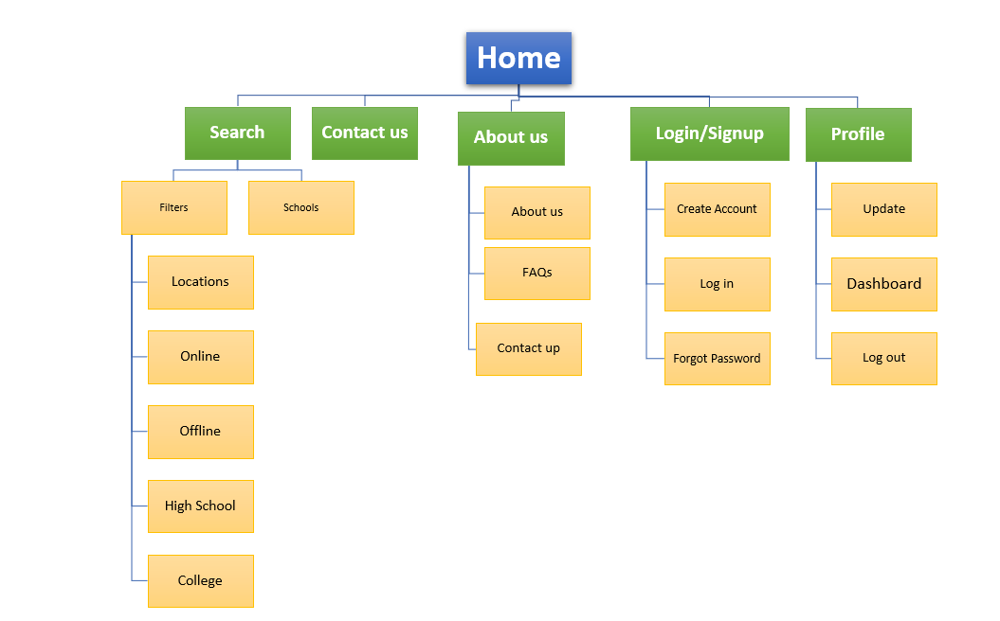

The problem:
The product:
The School
Finder is an online School finding website for the students and for everyone who wants to find school/university online from the confort of
home and can enroll in the school whichever suits them. The audience is wide. It is for everyone who
want to find school online.
Project
People don't
find any options to find best schools online with ease and get enrolled.
The goal:
Design an Online
School Finding website with easy options to enroll.
My role:
UX designer
designing the website for finding and enrolling in the school online from conception to delivery.
Responsibilities:
Conducting
interviews, paper and digital wireframing, low and high-fidelity prototyping, conducting
usability studies, accounting for accessibility, and iterating on designs.
Summary:
I conducted
interviews and created empathy maps to understand the users I'm designing for and their
needs. The user group identified through research were working adults and school passouts
who want to continue their studies.
These user groups confirmed initial assumptions about Online School Finder Website customers,
but research also revealed that students don't easily find schools online and where they can enroll. Other user problems included obligations, interests, or challenges
that make it difficult attend school in-person sometimes and want to attend online.
Accessibility
There are very few options available for finding schools and getting enrolled with ease.
Time
Sometimes Stuents don't have much time to go around in-person to find school or invest a lot of time surfing net.
Ease of access
There is no easy access for students and people from the comfort of home
Persona: Anish
Problem
statement:
Anna is a Makeup artist who needs online food ordering options because there
no option
available
User Journey Map:
Mapping
Ashish's user journey revealed how helpful it would be for users to have access to a dedicated
school finding site and app.
The sitemap was created to get a basic overview of the website.

Digital wireframes:
Because students access the site on a variety of different devices,
I started to work on designs for additional screen sizes to make sure the site would be fully responsive.
Low-fidelity prototype:
Using
the completed set of digital
wireframes, To create a low-fidelity prototype, I connected all of the screens involved in the primary user flow of adding an item to the cart and checking out.
At this point, I had received feedback on my designs from members of my team about things like placement of buttons and page organization. I made sure to listen to their feedback, and I implemented several suggestions in places that addressed user pain points.
High fidelity prototype
My hi-fi prototype followed the same user flow as the lo-fi prototype,
and included the design changes made after the usability study, as well as several changes suggested by members of my team. Below is interactive protoype embaded.
Impact:
The app makes users
feel like Foodways Hut really thinks about how to meet their needs.
One quote from peer
feedback:
“The app is easy to navigate and is well featured for ordering foodOur target users shared that the design was intuitive to navigate through,
more engaging with the images, and demonstrated a clear visual hierarchy.
What I learned:
I learned that even a small design change can have a huge impact on the user experience.
The most important takeaway for me is to always focus on the real needs of the user when coming up with design ideas and solutions.